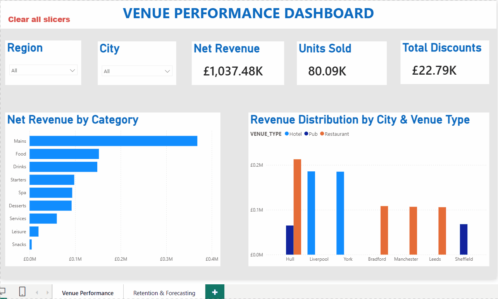
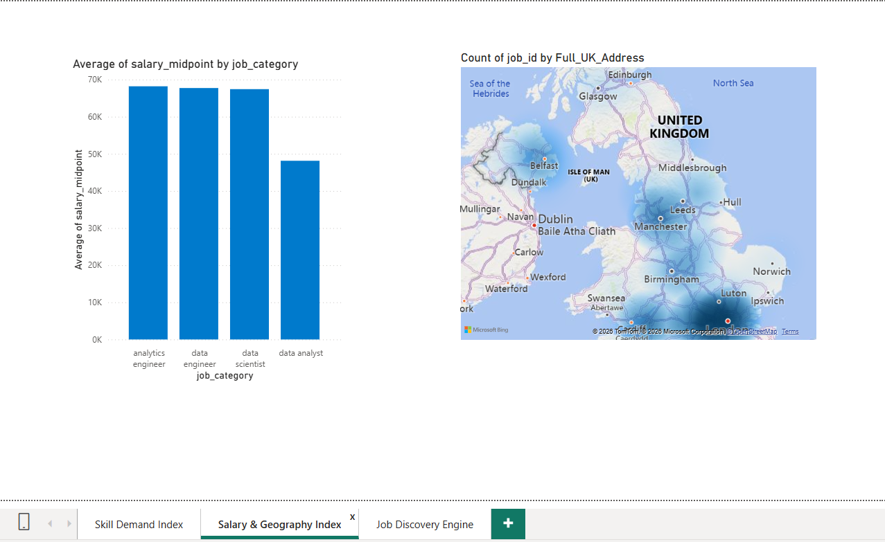
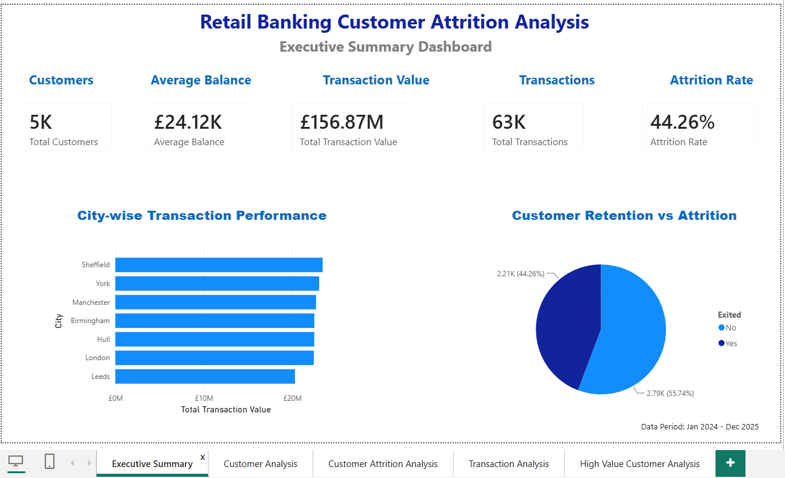

Hospitality EPOS Data Pipeline
Python → Azure SQL → ADF → Snowflake → dbt Cloud → Power BI. 50,000 EPOS transactions, full Snowflake RBAC, and a 3-tier dbt model powering a loyalty/CLV dashboard.
View Case Study →Hi, I'm Tanya Amber — a Data Engineer and Analytics Engineer with 4 years' experience building SQL-driven ETL and BI solutions inside global banking (ANZ, ING, Bank of Baroda), now rebuilt onto a modern stack of Azure, Snowflake, dbt Cloud, BigQuery and Power BI across four production-style portfolio projects.
Years' Experience
End-to-End Projects
Accounts Migrated (Bank Merger)
Four years progressing through Infosys on global banking clients — owning reporting layers, building SQL-based ETL, and mentoring engineers — followed by a self-directed rebuild onto Snowflake, dbt Cloud, Azure Data Factory and BigQuery while on a career break. I care about pipelines that are tested, documented and trusted by the business users who rely on them.
Read My Story →Infosys · ANZ, ING & Bank of Baroda · 2018–2022
Relocation to the UK · Rebuilt onto Cloud Data Stack
Data Engineer / Analytics Engineer roles, UK-based

Python → Azure SQL → ADF → Snowflake → dbt Cloud → Power BI. 50,000 EPOS transactions, full Snowflake RBAC, and a 3-tier dbt model powering a loyalty/CLV dashboard.
View Case Study →
Prefect-orchestrated ingestion of 200+ live job listings a day via the Adzuna API into BigQuery, with dbt transforms and a Power BI hiring-trends dashboard.
View Case Study →
5,000 customers and 62,000+ transactions analysed in SQL and Python to uncover behavioural churn drivers, visualised in a multi-page Power BI dashboard.
View Case Study →Live REST API ingestion into Google BigQuery using PyArrow and GCP IAM, feeding a Power BI reporting layer for financial transaction monitoring.
View Case Study →I'm currently seeking Data Engineer, Analytics Engineer and Data Analyst opportunities across the UK — full right to work, no sponsorship required.